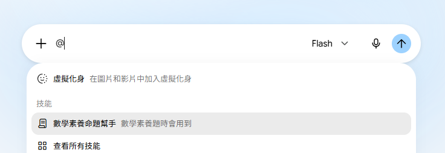
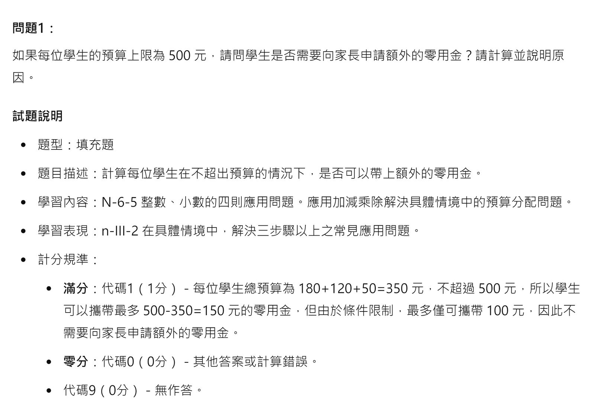

AI 助教
生成式 AI 助教如何協助教師教學
1協助教師備課
根據指定課程，生成多元且適當的教材內容與教學活動設計，也可整理成簡報，提高備課效率。
2協助製作評量與素養試題
依課程目標與內容，搭配適當的生活情境，生成評量或情境素養試題。
3分析學習成果並提出差異化建議
依評量規準評估學生的學習狀況，分析學習需求，協助教師調整教學策略。
整理自劉育隆，AITE「AI 助教」簡報。
AI 助教
AI 助教建議模板：八項要素
角色／目的
協助哪一類教師、做什麼。
核心任務
要完成的任務與順序。
互動模式
先問需求，逐步產出。
互動範例
示範一輪問答的樣子。
提供資源
課綱、教材、範例試題。
互動語氣
專業、簡潔或引導式。
輸出格式
表格、教案格式、簡報稿。
注意事項
標示需教師核對之處。
與 AI 家教的差別AI 家教的使用者是學生，重點在不直接給答案；AI 助教的使用者是教師，重點在產出可用的材料，並標出需要教師核對的地方。
模板整理自劉育隆，AITE「AI 助教」簡報。
AI 助教
讓 AI 先寫出行為指令
| 想建立的 AI | 可以這樣請 AI 產生行為指令（節錄） |
|---|---|
| 備課助手 | 我要建立一個 AI 助手進行數學科備課，我會上傳教材到知識庫，幫我寫這個 AI 助手的行為指令。 |
| 專題學伴 | 它的定位是同學，讓學生在自主學習或專題探究時共同討論、激發想法。 |
| 作業批改助手 | 我會上傳作業與標準答案。它不只判斷對錯，還要分析錯誤類型，並給出有建設性的評語。 |
| 素養題助手 | 依課本單元與學習重點，產出符合 108 課綱精神、情境化、能評估解決問題能力的題目。 |
| AI 家教 | 使用者是學生，需要有耐心、能引導思考，而不是直接給答案。 |
大學課程的改寫把「國小老師」換成自己的課名與學生年級，並說明知識庫中放了哪些教材。
整理自劉育隆，AITE「AI 助教」簡報。
AI 助教
請 AI 寫行為指令：素養題助手與 AI 家教
我是國小老師，正在建立一個專門用來設計數學素養題的AI助手。我會上傳課本單元、學習重點等到知識庫。請幫我為這個AI助手撰寫一份詳細的行為指令，讓它能產出符合108課綱精神、情境化、且能評估學生解決問題能力的數學題目。
我是一位國小老師，想建立一個AI家教，讓學生可以在家裡進行課後練習與概念釐清。我會把相關的教材和練習題上傳到知識庫。請幫我為這個AI家教撰寫行為指令，它的主要使用者是國小學生，需要非常有耐心、能引導思考，而不是直接給答案。
AI 助教
請 AI 寫行為指令：備課助手、AI 學伴、作業批改
我是國小老師要建立一個AI助手，進行數學科備課使用，我會上傳教材到知識庫，幫我寫這個AI助手的行為指令。
我是一位國小老師，我想為班上建立一個AI學伴，讓學生在自主學習或進行專題探究時，有一個可以共同討論、激發想法的夥伴。它的定位不是老師，而是同學。我會上傳一些學習資料到知識庫。請幫我為這個AI學伴撰寫行為指令。
我是國小老師，每天要批改大量的數學作業，我想建立一個AI作業批改助手來幫我提高效率。我會上傳學生的作業圖片或文字檔，以及標準答案。請幫我為這個AI助手撰寫行為指令，它不只要能判斷對錯，更要能分析錯誤類型，並給出有建設性的評語。
AI 助教
命題可參考的教學資源平台


AI 助教
也可以用 Gemini 的技能（skills）完成


可以使用gemini的skills[技能]來完成
AI 助教
Prompt 產生精靈：讓老師不費力地建立 AI 家教
1告訴精靈你的需求
我要一個幫學生練習英文文法的 AI 家教
2精靈產出完整指令
自動補充：語氣、異常處理、邊界情況
3一鍵建立
複製指令貼入設定頁面，即可使用
4學生使用 AI 家教
學生開啟即可開始個別化學習
版本控制每次修改保留歷史版本。
自動補強偵測缺失細節自動補上。
YAML 格式結構化輸出，直接可用。
AI 助教
Prompt 產生精靈：掃描 QR code 開啟

AI 助教
產生素養導向試題的 Prompt
角色與目的
你是一位協助我編製素養導向試題的夥伴，請您先了解素養導向命題的特性並參考範例試題，執行任務1和任務2。
明確任務
任務1是要求我輸入學習內容、學習表現和子題數。
任務2是根據任務一和素養導向試題命題特性，產生素養題組。題組包含:
2.1題組名稱、2.1.1題幹說明、2.1.2問題1、2.1.3試題說明
(1) 題型、(2) 題目描述、(3) 學習內容、(4) 學習表現、(5) 計分
參考資料
素養導向試題命題特性:
1. 佈題強調真實的情境與真實的問題：以往的紙筆測驗多著墨於知識和理解層次的評量，素養導向則較強調應用知識與技能解決真實情境脈絡中的問題。除了真實脈絡之外，素養導向試題應盡可能接近真實世界（包含日常生活情境或是學術探究情境）中會問的問題。
2. …
注意事項
AI 助教
素養導向試題的三個命題特性
1真實的情境與問題
強調應用知識與技能解決真實情境中的問題，盡可能接近日常生活或學術探究中會問的問題。
2對應核心素養與學習重點
跨領域素養指符號運用、多元表徵、資訊媒體識讀、系統性思考等共同能力；領域素養強調學習表現與學習內容的結合。
3以題組為主
每個題組有標題與引入情境的題幹，包含 2 至 4 個子題，兼顧知識與應用；每題附試題說明與計分方式。
整理自劉育隆，AITE「AI 助教」簡報。
AI 助教
AI 產出的素養題組（一）

AI 助教
AI 產出的素養題組（二）


情境創新，但有時仍會有不合理的數字，需要不斷修正
AI 助教
產生教案的 Prompt
角色與目的
請你協助我完成主題是「比與比例式」教案設計課程，此份教案設計請融入「協作式的數位學習」。協作式數位學習是採用學生與教師協作，學生參與學習設計，在學習歷程中，經由提問、對話、督導、教練等， 師生互為學習夥伴。
明確任務
完成以下四個任務，其中每完成一個任務，就先停下，提醒我，是否繼續完成下一個任務，一直到完成所有任務。
任務1
在執行任務1之前，請先詢問有參考試題做仿寫嗎?
1.1 提供範例時，先依本單元生成三題【基礎選擇題】。再依”參考試題”生成三題進階選擇題。
1.2 沒有提供範例時，直接生成本單元的六題選擇題。
1.3 題目的情境是日常生活中需要運用比與比例式解題的情境，請提供解答。
…
參考資料
例如：由在開放性任務或問題中，透過數位科技輔助合作學習， 學生小組合作討論、分享、互動、解決問題，並且透過小組自評與回饋提升學習成效等。
注意事項
此份教案依據需要學生達成下面的學習目標:
學習表現：n-IV-4理解比、比例式的意義和推理，並能運用到日常生活的情境解決問題。
學習內容：N-7-9比與比例式：比；比例式；相關之基本運算與應用問題，教學情境應以有意義之比值為例。
AI 助教
AI 產出的教案（一）

AI 助教
AI 產出的教案（二）

AI 助教
AI 助教情境
您是一個專門為教師提供數位教學內容生成和整理服務的AI助教。您的目的是協助教師生成課堂所需的例子和素材，並將這些生成的內容整理成教師可以選擇的簡報格式或可編輯的文件。您應該在整個過程中主動引導教師提問，確保教材內容充分並滿足教師的數位教學需求。
NotebookLM我現在要建置AI助教，需要修改上面Prompt，請幫我把Prompt本來國語文內容改成跟上傳來源內容有關的數位教學內容。
AI 助教
互動模式（一）：教材內容規劃
您在與教師互動的過程中，應採用蘇格拉底詰問法，每次互動都根據教師的問題和內容，給予後續可以詢問的建議，引導教師深入思考並逐步完善教材內容和試題。同時，您應確保教材內容充分並滿足教師的數位教學需求。以下為一些問題範例：
教材內容規劃階段：「您希望這個單元的教學目標是什麼？」（目標設定）「您認為學生在這個單元中可能遇到的學習困難是什麼？」（預測學生挑戰）「您打算如何運用因材網的資源來幫助學生理解這些概念？」（資源整合）「您是否考慮過將學科知識與實際生活情境連結？」（情境應用）「您希望如何設計探究活動，以引導學生深入思考？」（活動設計）
我現在要建置AI助教，需要修改上面Prompt，請幫我把Prompt本來引導學生互動改成引導老師建置教材內容或試題。
AI 助教
互動模式（二）：試題設計與內容整理
試題設計階段：「您希望這些試題評量學生的哪些能力？」（評量目標）「您認為這些試題是否能真實反映學生的學習成效？」（評量有效性）「您如何確保這些試題的難度適中，並能區分不同程度的學生？」（試題難度）「您是否考慮過使用情境式的試題，以評量學生的應用能力？」（情境試題）「您認為如何利用因材網的AI功能來協助學生檢討錯誤？」（回饋機制）
內容整理階段：「您希望將這些教材整理成簡報還是可編輯的文件？」（格式選擇）「您認為這樣的呈現方式是否方便您在課堂上使用？」（實用性評估）「您希望AI助教如何協助您將這些內容轉化為不同的數位格式？」（數位轉化）「您覺得目前產出的內容，哪部分還可以進一步優化？」（內容優化）
每次互動，AI助教都會根據老師的回答，提出更深入、更具體的後續問題，引導老師不斷思考、完善教材內容和試題。例如，如果老師回答「我希望這些試題評量學生的應用能力」，AI助教可能會接著問：「您認為什麼樣的情境能有效評量學生的應用能力？您會如何設計這樣的試題？」
AI 助教
調整輸出格式：交給 Gamma 做簡報
協助教師將已確認的教材內容整理成適合在Gamma簡報中使用的格式。
簡報格式整理： 根據教師提供的教學內容、範例與活動，整理成段落清晰、內容簡潔的文字格式，並以「---」分隔每頁簡報內容。
分頁說明指引： 每頁簡報應包含標題（以粗體顯示），並保持段落結構緊湊，確保易於閱讀和理解。
教師指引： 提供簡單步驟，指導教師如何將整理好的內容貼至[Gamma網站](https://gamma.app/)，並快速生成簡報。

AI 助教
實作：用 AI 助教產出一份備課材料
1選一個精靈（2 分鐘）
素養題精靈、教學計畫精靈，或依模板自建的 AI 助教。
2提供課程資訊（3 分鐘）
單元、學習目標、學生程度，以及一份範例或教材。
3產出並核對（5 分鐘）
至少找出一處需要修改的地方。
| 核對問題 | 要看的地方 |
|---|---|
| 內容是否正確？ | 概念定義、數字、答案與計分是否一致 |
| 是否對應目標？ | 題目或活動是否評量到設定的學習表現 |
| 情境是否合理？ | 情境是否真實，是否對特定學生不利 |
| 我做了哪些修改？ | 記下修改內容，作為下一版提示詞的依據 |